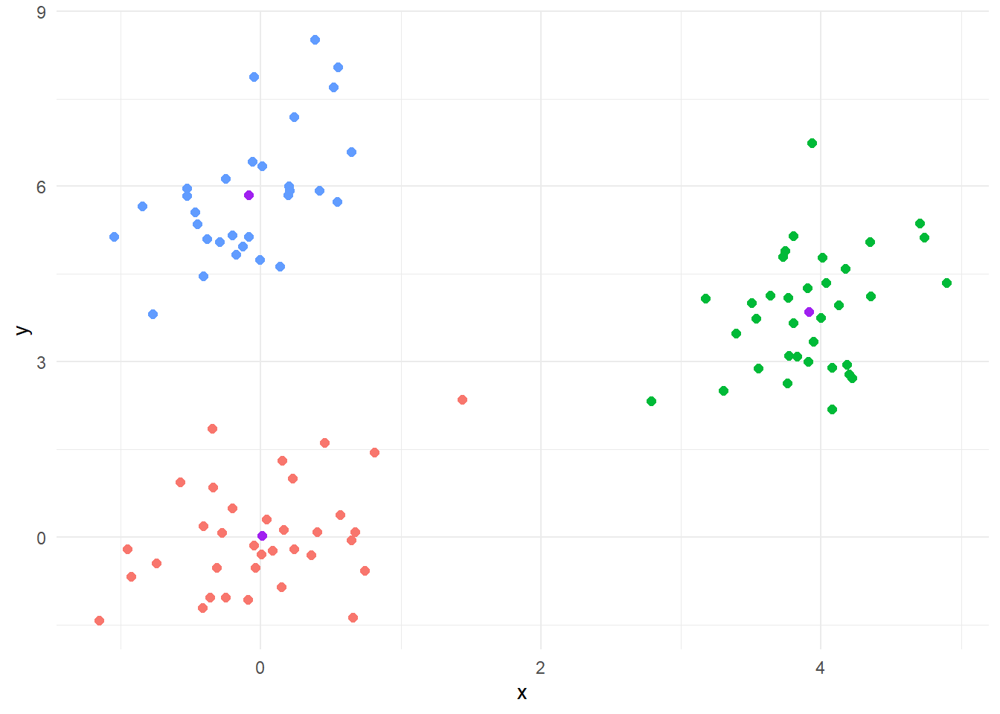
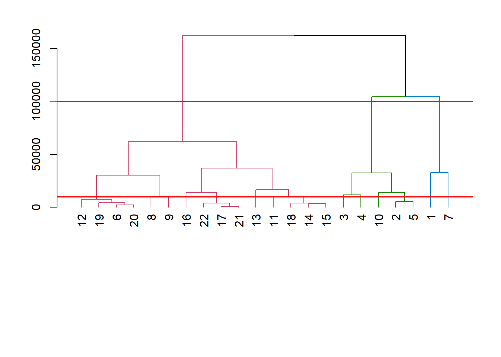
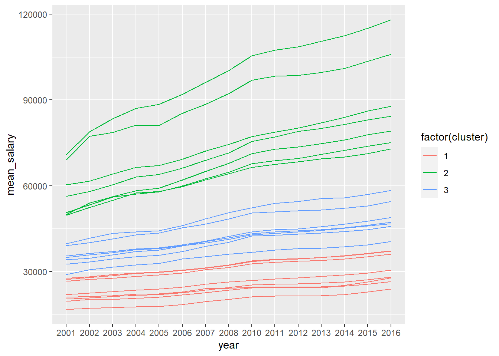
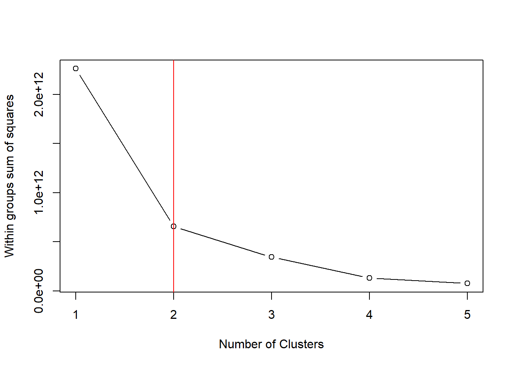
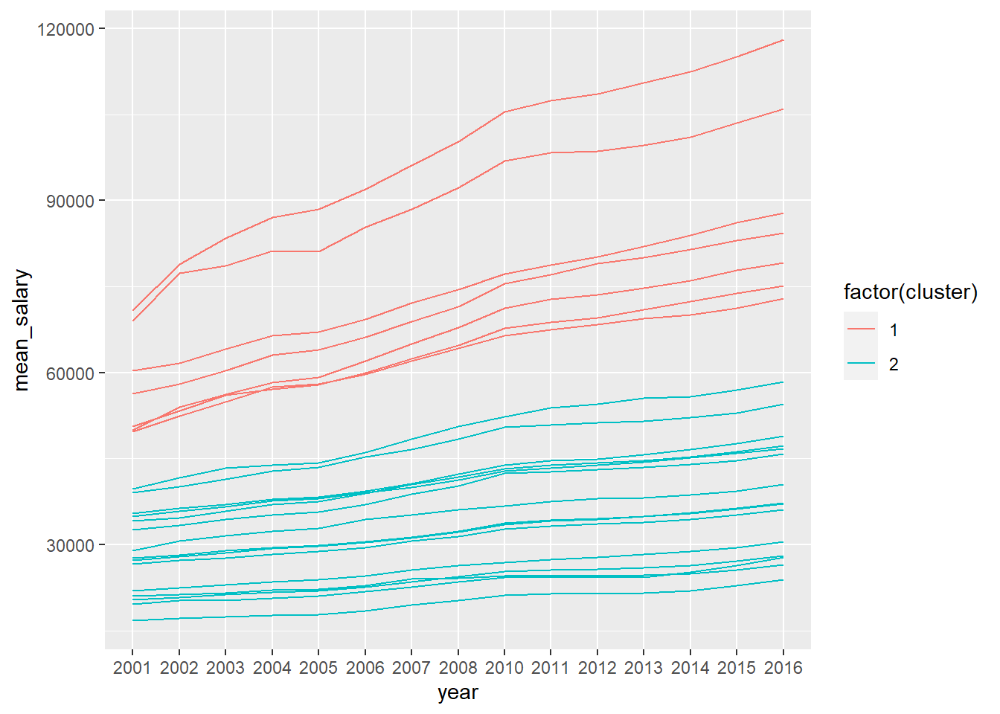
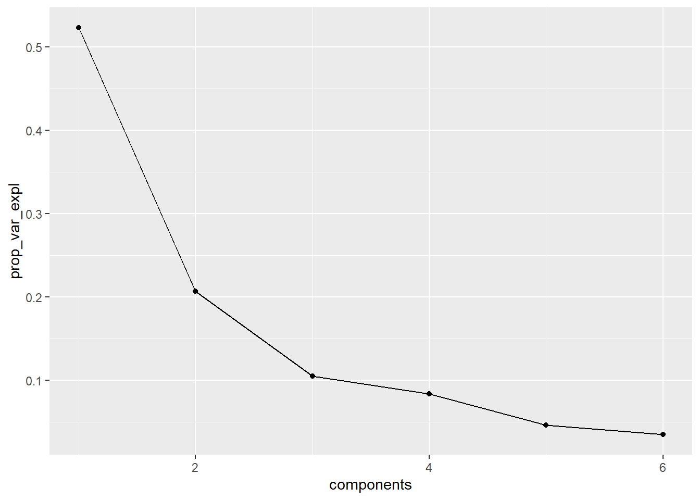
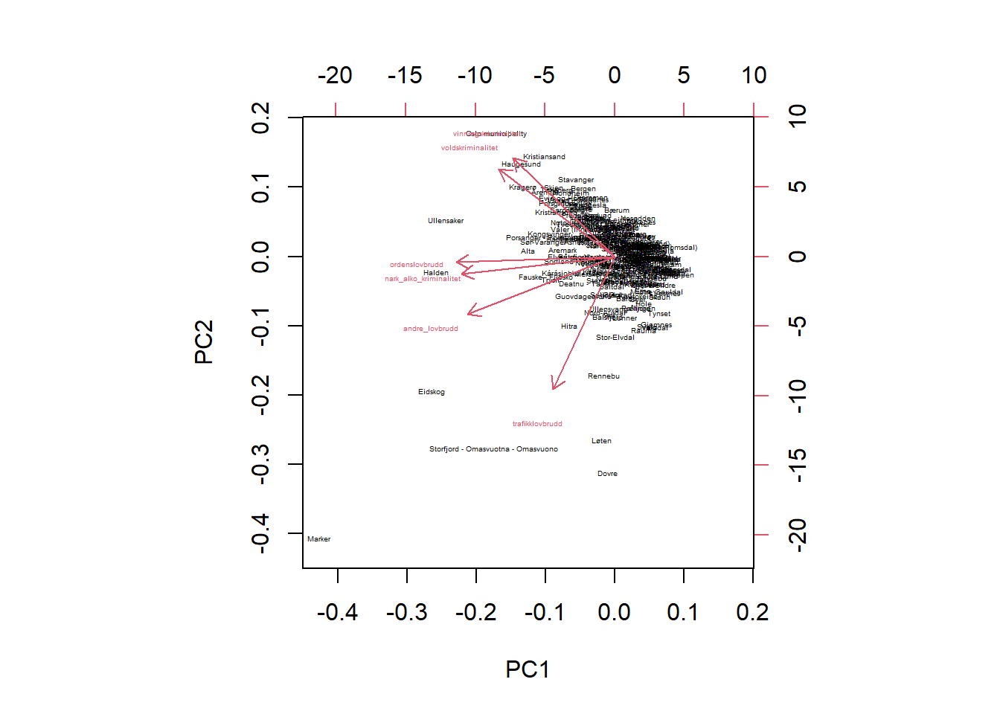

library(tidyverse) # datahåndtering, grafikk og glimpse()
library(skimr) # funksjonen skim() for å se på data
library(rsample) # for å dele data i training og testing
library(dendextend)
library(directlabels)10 Unsupervised learning
I dette kapittelt skal vi bruke følgende pakker:
“Usupervised learning” er betegnelsen på en type teknikker der vi ikke har et spesifikt observerbart utfall. (Alle andre teknikker for prediksjon kaller vi derfor “supervised learning”). De teknikkene for unsupervised learning vi skal se på her er vanlige former for klustering og datareduksjon.
Det er to vanlige formål med disse teknikkene:
- beskrive et stort og komplisert materiale ved å forenkle til noen færre kategorier
- lete etter underliggende strukturer i data som ikke er direkte observerbart
- pre-prosessering av data før man fortsetter med supervised learning
Formål 2) er litt kryptisk, men f.eks. en bedrift kan ha nytte av å dele inn kundemassen i ulike segmenter og rette seg inn mot disse på en systematisk måte.1
For formål 3) gjelder hvis man har veldig mange variable som er korrelerte, men hver for seg ikke er særlig sterke prediktorer. Vanlige prediksjonsmodeller vil ikke alltid være så effektive i slike situasjoner. Forenklede variable som klustre eller principal components kan da fungere bedre. En liten advarsel: man ser litt for ofte at denne typen resultater tolkes litt spekulativt i den forstand at klustre eller principal components tillegges en substansiell betydning. Det hender folk sier at de har “identifisert” underliggende klustre eller dimensjoner etc.2 Men altså: klustermetoder lager klustre. Så teknikken lager klustre uansett, og det er ingen magisk innsikt her utover det. Men det kan være nyttig det, altså!
10.1 K-means klustering
Vi starter med et tenkt eksempel der det er to variable og tre klustre, men tilhørighet til kluster er ikke direkte observerbart (altså: det er ingen variable for kluster).
Her ser du de første seks observasjonene i datasettet:
x y
1 -0.7708857 3.821888
2 4.1734709 4.597204
3 0.5497190 8.046265
4 -0.2492836 -1.024751
5 -0.4691657 5.556987
6 3.9338419 6.738554Vi kan så plotte x og y i et scatterplot. I dette tilfellet ser vi tydelig at det er tre klynger av datapunkter. Ofte vil det ikke være så lett å se, men disse dataene er laget slik at det skal være lettere å se hvordan algoritmen fungerer.

I plottet er punktene nå lagt inn tre tilfeldige punkter som marker startpunktet for algoritmen. Disse punktene er tilfeldig valgt, og markerer et første steg som forsøksvis sentrum av tre klustre. Antall klustre må vi altså bestemme selv i forkant.
For hvert av øvrige datapunktene regnes det så avstanden til hvert av disse tre tilfeldige “klustrene”. Hvert datapunkt klassifiseres så til det klusteret de er nærmest.

Etter at hvert datapunkt er klassifisert til det “klusteret” de er nærmest, kan det så regnes det ut midtpunktet for hvert kluster. Dette midtpunktet er så utgangspunktet for neste runde med klassifisering: avstanden fra alle datapunkter til midtpunktet regnes ut og ny klassifisering til det klusteret datapunktet er nærmest.

Etter ny klassifisering, regnes det så ut et nytt midtpunkt og vi gjør det hele en gang til: regner ut avstanden og klassifiserer til nærmeste.

Et nytt midtpunkt regnes ut og vi gjør det hele enda en gang.

Merk nå at i siste runde var det ingen av punktene som byttet kluster. Da avsluttes algoritmen og alle punkter er klassifisert etter hvilket kluster de er mest lik de andre punktene.
I dette eksempelet er klusterne tydelig separert og det er forholdsvis lett å gjøre klassifiseringen. I andre tilfeller er det ikke nødvendigvis like greit, og det må langt flere iterasjoner til før det landes på en løsning.
Det er verd å merke seg at startpunktet (altså de tre tilfeldige punktene) kan ha betydning for løsningen. Det er derfor vanlig at software tester ut flere startverdier og velger den løsningen som passer best.
10.1.1 K-means med kmeans()
Code
head(df) x y
1 -0.7708857 3.821888
2 4.1734709 4.597204
3 0.5497190 8.046265
4 -0.2492836 -1.024751
5 -0.4691657 5.556987
6 3.9338419 6.738554Code
library(downloadthis)
df %>%
download_this(
output_name = "df dataset",
output_extension = ".rds",
button_label = "Download data as rds",
button_type = "default",
has_icon = TRUE,
icon = "fa fa-save"
)Heldigvis er det en funksjon som fikser hele saken for oss. Funksjonen kmeans() trenger primært tre imput: de dataene som skal klustres, antall klustere, og antall tilfeldige startverdier. Antall klustre må vi altså bestemme selv.
Her er en kode som først kjører kmeans-algoritmen. I det objektet som kommer ut er det en vektor som heter ...$cluster som er selve klassifiseringen. Denne kan vi legge inn som en ny variabel i datasettet. Merk at rekkefølgen på observasjonene og output-objektet er den samme, så det blir riktig å bare legge til vektoren som en ny variabel. Dernest kan vi plotte resultatet.
Code
km_df <- kmeans(df, centers = 3, nstart=20)
df_p <- df %>%
mutate(cluster = km_df$cluster)
ggplot(df_p, aes(x=x, y = y, col = factor(cluster), shape = factor(cluster))) +
geom_point()
Dette ble selvfølgelig likt som i den trinnvise prosedyren vist ovenfor. Det kan være greit å være klar over at navnet på hvert kluster (1, 2 eller 3) er tilfeldig og du kan få en annen rekkefølge på navnene en annen gang. Det spiller ingen rolle, men er lett å bli forvirret av.
10.1.2 Hvor mange klustre trenger man?
Tja. Hvis du har en god tanke om hvor mange klustre du trenger, så er jo saken grei. Da bruker du disse. Hvis du derimot ikke vet - og det er det vanlige - så kan du gå for det antallet som best oppsummerer dataene. Men hva er så det? Et mål er summen av avstandene til sentrum innenfor hver kluster. Omtales gjerne som “within total sum of squares”. Den løsningen (dvs. antall klustre) som gir lavest kvadratsummer er da den som er “best”.
I praksis betyr det at man tilpasser modellen flere ganger, med trinnvis flere klustre. Så kan man sammenligne “within total sum of squares”.
Den etterfølgende koden gjør dette. Den er litt krøkete, dessverre da den innebærer å skrive en loop.3 Her er i hvert fall full kode.
Code
wss <- 0
# For 1 to 15 cluster centers
for (i in 1:5) {
km.out <- kmeans(df, centers = i, nstart=20)
# Save total within sum of squares to wss variable
wss[i] <- km.out$tot.withinss
}
# Plot total within sum of squares vs. number of clusters
plot(1:5, wss, type = "b",
xlab = "Number of Clusters",
ylab = "Within groups sum of squares")
# Marker "albuen" med en linje i plottet
abline(v=3, col="red")
Kvadratsummen reduseres for antall klustre. Intuitivt er jo det rimelig: jo flere klustre - jo kortere er avstanden til et kluster-sentrum. Men merk at trenden flater ganske tydelig ut etter 3 klustre. Altså: forbedringen i tilpassning er minimal. Et slikt plot kalles “elbow method” eller “scree plot”. Beste modell er der hvor kurven får en “albue”, eller med andre ord: der reduksjonen avtar. Det er ikke alltid det er lett å bedømme, men her er det ikke en egentlig fasit. Det finnes ingen fasit hvis man ikke fra før av vet at det finnes et gitt antall klustre.
10.1.3 Longitudinelle data
Det er nok vanligst å klustre ulike variable. Men hvis variablene innholder verdier for ulike tidsenheter (f.eks. per år), så kan vi også analysere tidstrender på denne måten. Antall variable som klustres kan være flerdimensjonalt. Ovenfor er det brukt bare to variable, men normale er jo at det er langt flere dimensjoner samtidig.
10.2 Hierarkisk klustering
OBS! Som dere ser er ikke denne delen tilstrekkelig gjennomarbeidet i tide til at det er til veldig mye hjelp for dere før eksamen. Legg derfor vekt på k-means og PCA. Men ta en titt på pensumet likevel slik at dere kjenner litt til hva dette er.
Exercise 10.1 Last ned filen med kommunedata fra Canvas. Dette er deler av dataene vi brukte i første seminar med kommunetall. Her er det anmeldt kriminalitet per 1000 innbyggere i kommuner i 2016.
- Gjør en hierarkisk klusteranalsyse. Er det noen kommuner som skiller seg veldig fra de andre? Spiller det noen rolle hvilken type distance du setter?
- Hvilke kommuner er de de klusterne som skiller seg ut?
- Hva kjennetegner lovbruddsbildet i de ulike klustrene? Kan du tenke deg noen grunner til at akkurat disse stikker seg ut?
Solution. Leser inn data om inntektsutvikling for ulike yrker fra 2001 til 2016
Dataene er i “bred” format. Det er slik vi vil ha det for clusteranalyse, men dårlig for å lage en graf.
Code
# load("../data/oes.RData")
#
# gathered_oes <- gather(data = df_oes,
# key = year,
# value = mean_salary,
# -occupation)Code
ggplot(gathered_oes, aes(x=as.numeric(year), y=mean_salary, col = occupation))+
geom_line()
Code
dist_oes <- dist(df_oes[,-1], method = "euclidian") # calculate distances
hc_oes <- hclust(dist_oes, method = "single") # minste avstand
hc_oes <- hclust(dist_oes, method = "complete") # lengste avstand
hc_oes <- hclust(dist_oes, method = "average") #gjennomsnittlig avstand
par(mar=c(10,4,2,2)) # Endre marginer for base-plot
dend_oes <- as.dendrogram(hc_oes) #Create a dendrogram object
dend_colored <- color_branches(dend_oes, h = 100000)
plot(dend_colored)
# Illustrer mulige cutoff - legger linjer oppå eksisterende plot
abline(h=100000, col="red", lwd=1.5) # Viser cut ved h=100000
abline(h=10000, col="red", lwd=1.5) # Viser cut ved h=10000
Code
# Henter ut cluster ved valgt h
cluster <- cutree(hc_oes, h=100000)
#cluster <- cutree(hc_oes, k=3)
table(cluster)cluster
1 2 3
2 5 15 Code
# Legger til vektoren cluster til opprinnelige data
hclust_oes <- mutate(df_oes, cluster = cluster)
head(hclust_oes) occupation 2001 2002 2003 2004 2005 2006 2007 2008
1 Management 70800 78870 83400 87090 88450 91930 96150 100310
2 Business Operations 50580 53350 56000 57120 57930 60000 62410 64720
3 Computer Science 60350 61630 64150 66370 67100 69240 72190 74500
4 Architecture/Engineering 56330 58020 60390 63060 63910 66190 68880 71430
5 Life/Physical/Social Sci. 49710 52380 54930 57550 58030 59660 62020 64280
6 Community Services 34190 34630 35800 37050 37530 39000 40540 41790
2010 2011 2012 2013 2014 2015 2016 cluster
1 105440 107410 108570 110550 112490 115020 118020 1
2 67690 68740 69550 71020 72410 73800 75070 2
3 77230 78730 80180 82010 83970 86170 87880 2
4 75550 77120 79000 80100 81520 82980 84300 2
5 66390 67470 68360 69400 70070 71220 72930 2
6 43180 43830 44240 44710 45310 46160 47200 3Code
# vrenger dataene "nedover" for å plotte
gathered_oes <- gather(data = hclust_oes, # datasett
key = year, # navn på ny variabel, verdier hentes fra gamle variabelnavn
value = mean_salary, # navn på ny variabel med gamle variabelverdier
-occupation, -cluster) # variable som skal beholdes / grupperes etter
ggplot(gathered_oes, aes(x = year, y = mean_salary, color = factor(cluster), group = occupation)) +
geom_line()
Exercise 10.2 Gjenta analysen over med k-means clustering. Hvor mange klustre bør det være? Får du samme resultat?
Solution.
Code
## K-means clustering med samme data
# Eksempel ved å sette antall kluster til 3
# I dette tilfellet bør vi få samme resultat
km_oes <- kmeans(dist_oes, centers = 3)
table(km_oes$cluster)
1 2 3
8 7 7 Code
kmclust_oes <- mutate(df_oes, cluster=km_oes$cluster)
# Plotter
gathered_kmoes <- gather(data = kmclust_oes, # datasett
key = year, # navn på ny variabel, verdier hentes fra gamle variabelnavn
value = mean_salary, # navn på ny variabel med gamle variabelverdier
-occupation, -cluster) # variable som skal beholdes / grupperes etter
ggplot(gathered_kmoes, aes(x = year, y = mean_salary, color = factor(cluster), group = occupation)) +
geom_line()
Code
### K-means clustering. Make a search
wss <- 0
# For 1 to 15 cluster centers
for (i in 1:5) {
km.out <- kmeans(dist_oes, centers = i, nstart=20)
# Save total within sum of squares to wss variable
wss[i] <- km.out$tot.withinss
}
# Plot total within sum of squares vs. number of clusters
plot(1:5, wss, type = "b",
xlab = "Number of Clusters",
ylab = "Within groups sum of squares")
# Marker "albuen" med en linje i plottet
abline(v=2, col="red")
Code
oes <- readRDS("../data/oes.rds")
## Create final clustering
km_oes <- kmeans(oes, centers = 2, nstart=20)
table(km_oes$cluster)
1 2
7 15 Code
kmclust_oes <- mutate(df_oes, cluster=km_oes$cluster)
gathered_kmoes <- gather(data = kmclust_oes, # datasett
key = year, # navn på ny variabel, verdier hentes fra gamle variabelnavn
value = mean_salary, # navn på ny variabel med gamle variabelverdier
-occupation, -cluster) # variable som skal beholdes / grupperes etter
ggplot(gathered_kmoes, aes(x = year, y = mean_salary, color = factor(cluster), group = occupation)) +
geom_line()
10.3 Datareduksjon med principal component analysis (PCA)
Vi starter med datasettet for kriminalitet i norske kommuner.
Code
kommune <- readRDS( "data/kommunedata.rds") %>%
filter(year == max(year)) %>%
#select(-c(1,3))
select(2, vinningskriminalitet:andre_lovbrudd)
glimpse(kommune)Rows: 251
Columns: 7
$ kommune <chr> "Oslo municipality", "Eigersund", "Stavanger", …
$ vinningskriminalitet <dbl> 31.9, 9.7, 22.3, 21.2, 18.1, 5.0, 6.4, 9.3, 19.…
$ voldskriminalitet <dbl> 11.0, 3.9, 7.0, 10.3, 6.4, 3.5, 6.5, 4.2, 6.1, …
$ nark_alko_kriminalitet <dbl> 7.0, 6.9, 7.2, 10.7, 6.4, 3.2, 4.1, 5.3, 6.0, 4…
$ ordenslovbrudd <dbl> 10.8, 4.0, 4.9, 10.0, 4.6, 3.5, 3.3, 3.6, 5.0, …
$ trafikklovbrudd <dbl> 6.7, 10.2, 5.2, 5.6, 6.8, 5.0, 6.3, 7.1, 6.5, 6…
$ andre_lovbrudd <dbl> 18.3, 9.2, 11.5, 12.7, 9.2, 6.3, 8.7, 9.2, 13.4…Så et lite triks som ikke er viktig for resultatet som sådan, men hjelper å holde orden på dataene. Vi er kjent med at kolonnene i et datasett har navn: altså variabelnavn. Men i R kan også radene ha navn. Det er ikke like vanlig å bruke til noe spesielt, men her er det nyttig å ta det med seg.
Code
row.names(kommune) <- kommune[,1]Så kan vi kjøre en principal component analyse. Det er her viktig å sette scale = TRUE. Dette gjør at dataene re-skaleres til en z-skår med gjennomsnitt 0 og standardavvik 1. Det skal veldig gode grunner for å gjøre noe annet, så gjør alltid dette.
Code
library(stats)
pr_komm <- prcomp(kommune[,-1], scale = TRUE, center = TRUE)
summary(pr_komm)Importance of components:
PC1 PC2 PC3 PC4 PC5 PC6
Standard deviation 1.7710 1.1142 0.7933 0.70871 0.52972 0.45832
Proportion of Variance 0.5227 0.2069 0.1049 0.08371 0.04677 0.03501
Cumulative Proportion 0.5227 0.7296 0.8345 0.91822 0.96499 1.00000Code
mean(kommune$vinningskriminalitet)[1] 7.896016Code
pr_komm$center vinningskriminalitet voldskriminalitet nark_alko_kriminalitet
7.896016 5.472908 5.596813
ordenslovbrudd trafikklovbrudd andre_lovbrudd
4.344223 9.896414 9.712749 Code
pvar <- pr_komm$sdev^2
pve <- pvar/sum(pvar)
plot(1:6, pve, )
Code
dt <- data.frame(components = 1:length(pve), prop_var_expl = pve)
ggplot(dt, aes(x = components, y = prop_var_expl))+
geom_line()+
geom_point()
Da kan resultatene vises grafisk som følger.
Code
biplot(pr_komm, cex = .3)
Code
kommune_scale <- kommune %>%
mutate(across(where(is.numeric), scale))
glimpse(kommune_scale)Rows: 251
Columns: 7
$ kommune <chr> "Oslo municipality", "Eigersund", "Stavanger", …
$ vinningskriminalitet <dbl[,1]> <matrix[26 x 1]>
$ voldskriminalitet <dbl[,1]> <matrix[26 x 1]>
$ nark_alko_kriminalitet <dbl[,1]> <matrix[26 x 1]>
$ ordenslovbrudd <dbl[,1]> <matrix[26 x 1]>
$ trafikklovbrudd <dbl[,1]> <matrix[26 x 1]>
$ andre_lovbrudd <dbl[,1]> <matrix[26 x 1]>10.3.1 Multippel korrespondanseanalyse
PCA har egentlig som forutsetning av variablene er kontinuerlige, og det er litt trøblete å bruke det på kategoriske variable. Men ofte har vi kategoriske variable.
En variant av PCA for kategoriske variable er korrespondanseanalyse, som i teorien altså skal være bedre enn PCA. I praksis er det imidlertid ikke nødvendigvis veldig stor forskjell, så det er neppe stor skade skjedd hvis man bruker PCA likevel.
OBS! Det spiller ingen rolle om disse gruppene er reelle som gruppe eller ikke. At de oppfører seg rimelig likt holder til formålet.↩︎
Av høflighetsgrunner er referanser til eksempler utelatt. Men det er ikke vanskelig å finne. Eksemplene er heller ikke avgrenset til akkurat disse metodene, men gjelder også en rekke andre teknikker med tilsvarende formål.↩︎
Det er muligens greit for de av dere som har lært en god del R tidligere. Ikke like greit for dere andre. ↩︎